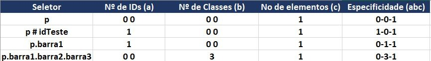

Tabela da Especificidade
A especificidade é o sistema de pontuação que o navegador usa para decidir qual regra CSS deve ser aplicada a um elemento quando há um conflito. A regra com a pontuação mais alta vence.

A comparação é hierárquica, o que significa que o maior número na coluna da esquerda sempre vence, independentemente dos números nas colunas da direita.
Se as pontuações forem exatamente iguais (ex: ambas (0, 0, 1, 0)), a regra que aparece por último no código CSS é a que prevalece (Ordem de Origem).